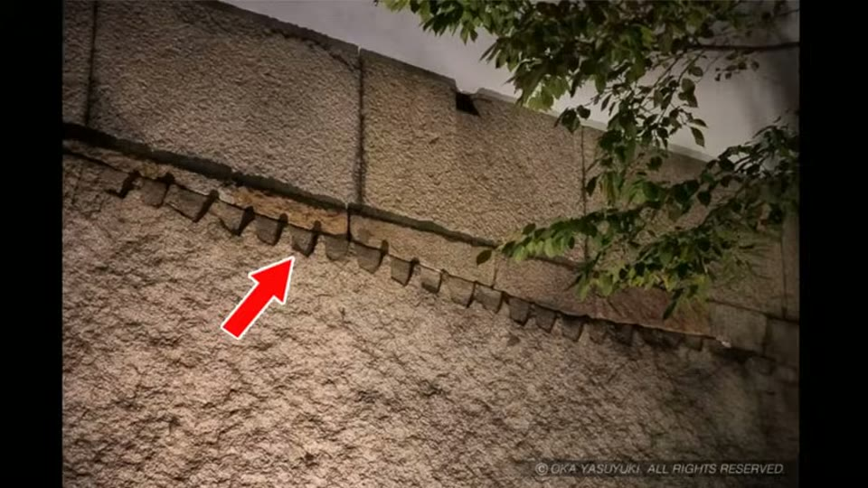
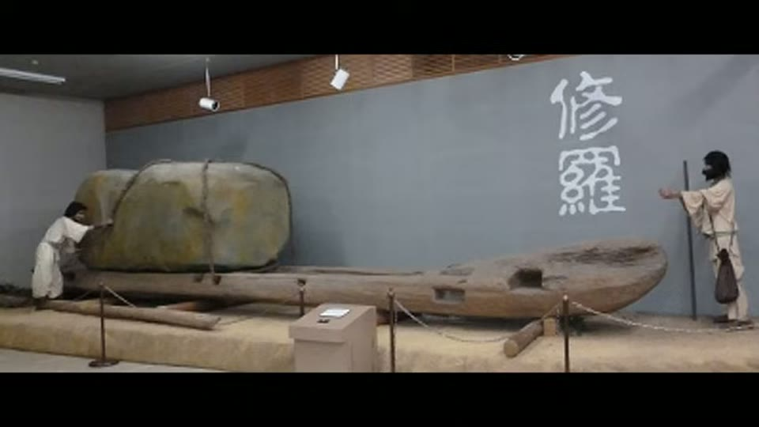

Curious Being
Osaka Castle Megaliths: Lost High-Tech or Human Ingenuity?
Tina · 16 min · watch on YouTube · summarised 2026-08-23
Osaka Castle's megaliths are among the most cited large stones outside Egypt and Peru. The largest, the Octopus Stone, measures 5.5 × 11.7 m and is estimated at about 108 tonnes; there are at least ten comparable stones in the castle 00:20–00:50. They are granite, and most came from quarries on two islands over 110 km away.
The construction is documented. The original castle was late 16th century; after its destruction the present one was built under Tokugawa Ieyasu from the 1620s, and the megaliths were installed during that decade-long reconstruction.
They are not blocks
The observation the video turns on 01:40–02:40: these are slabs, not blocks — large in surface area and thin.
The Octopus Stone is about 75 cm thick, under two and a half feet, and from the top of the wall you can see that it is a plate. The Higo Stone, second by surface area, is 80–90 cm. Both are leaning against the walls behind them rather than bedded into them, and a cross-section showing this is on display in the Osaka Castle Museum.

The observation the whole argument turns on: the largest megalith is a thin plate leaning on the wall behind it, not a block bedded into it.
At the Otemon gate, three stones each around 5 m high and 8 to 11 m wide stand together. The museum's chief curator, Atobe Makoto, is quoted directly: "these three rocks are three slices of a single giant boulder" 02:40–03:00.
Because the slabs only lean, they carry no structural load.
How they were split, in plain sight
The method is visible on the stones themselves 03:00–04:20. Evenly spaced wedge holes run along the top edge of one megalith, and rows of wedge marks appear on the Octopus Stone's slanted top and its side. There are even wedge holes on the thin edge of the slab, as though someone had once begun splitting it thinner again.

The splitting method is still on the stone: feather and wedge, the same technique used by ordinary masons then and now.
This is feather and wedge: a line of keyholes cut into the rock, wooden wedges driven in and then wetted so they swell and crack the stone along the line. It leaves fairly flat faces, which is what the Osaka megaliths have. She notes that the metal wedges visible between stones today are understood to be for stabilisation, not splitting.
Her conclusion here is flat: the slabs were made by a conventional technique, not by lost technology — though splitting stones this size cleanly still required highly skilled masons.
Why anyone would build with stone veneer
The interesting question is not how but why, and the answer is political 04:20–08:30.
Large stones at a castle entrance signalled strength and authority, so they were placed where they would be seen — gates and main approaches. After the Tokugawa defeated the Toyotomi, the shogunate ordered the rebuilding of Osaka Castle in 1620 with two purposes: to display the new ruler's command over the lords, and to drain the finances of the western daimyo. Sixty-four daimyo shared the wall-building over ten years, and roughly one million granite stones were quarried for it. Their clan symbols are still on the stones.
The shogunate did not demand the biggest megaliths. The daimyo supplied them anyway, engraved with their own crests, to show loyalty — and, she suggests, it became a competition over whose domain had the finest masonry. The walls were an exhibition ground.
The best detail in the video 07:30–08:30. A Japanese guide reports a convention that a stone's depth should exceed its height, so that blocks sit deep in the wall and hold. To a 17th-century visitor, then, a stone over five metres tall implied a stone more than five metres deep. The slab exploits a rule the audience already knew. It is an optical argument, aimed at people who understood walls.
Placement follows the same logic: the Octopus Stone stands at the Sakuramon Gate, the official gate to the main enclosure and the donjon, which only daimyo could use, and the stones flanking it are the tenth and eleventh largest in the castle. The gate is aligned with the castle building.
Getting them there
Seven of the top ten megaliths, including the largest three, were brought by Ikeda Tadao, lord of Okayama; the other three by Kato Tadahiro, lord of Kumamoto 09:00–10:00. Stone from Inujima is still quarried today to repair these walls.
The evidence for the method is again physical 10:00–13:00:
- Wedge marks on leftover blocks at many of the supplying quarries. Several towns keep the residual stones in memorial parks — Shodoshima's Osaka Castle Memorial Park displays the abandoned stones alongside the tools used to break and move them.
- Shura, large wooden sleds run on logs, used in Japan since the Kofun period; some have curved profiles and wheels at the back. Several memorial parks exhibit them, and Japanese illustrations show them being hauled — many workers pulling at the front, others levering from behind with long poles. She suggests bulls were probably used too, noting a specialised Japanese book on bulls from as early as 1279.

The documented transport equipment: a wooden sled, run on logs, in use in Japan since the Kofun period.
- The sea did most of the work. Many granite quarries stood directly on the coast; those inland slid blocks down a stone path to loading docks. One account has stones loaded at low tide and floated off on the high.
On whether 17th-century ships could carry a hundred tonnes, she gives a check rather than an assertion 12:30–13:30: European vessels of 800 tonnes existed, and the Dutch circumnavigator Olivier van Noort met a 110-tonne Japanese sailing ship in the Philippines in 1600, two decades before these stones moved.
She closes with a comparison for perspective: the granite Aqueduct of Segovia was finished in 112 AD, fifteen centuries before Osaka Castle.
What you can check yourself
- The thickness of the Octopus Stone is the whole argument, and it is visible from the top of the wall, stated on the museum's own display, and measurable.
- Whether the slabs lean rather than bed into the wall is shown in cross-section in the Osaka Castle Museum.
- The wedge holes are on the stones, in daylight, and are the same marks left by a technique still in use.
- The curator's statement about the Otemon stones being three slices of one boulder is attributable to a named person in a named institution.
- The construction record — 1620, ten years, 64 daimyo, roughly a million stones — is documentary history, not inference.
- Daimyo crests on the stones can be found and counted.
- The quarry memorial parks on Shodoshima and elsewhere hold the abandoned blocks, the wedge marks and the transport equipment, and are open to visitors.
- Van Noort's 110-tonne Japanese ship in 1600 is a datable written record.
What the video does not settle
- Thin is not light. A 108-tonne slab is still 108 tonnes, and reframing the stones as veneer answers the question of how deep they are, not how they were moved or raised. The transport section is the weaker half and rests on inference from equipment and analogy rather than on a record of these particular stones being moved.
- The bulls are a guess, and she says so. A book about cattle from 1279 establishes that Japan had draft animals, not that they hauled these stones.
- No weight is given for the largest slab as split, so the 108-tonne figure for the Octopus Stone is not reconciled with its being a plate — the reader is left to trust that both are true of the same object.
- The low-tide loading account is offered as one theory among several and is not attributed.
- The Segovia comparison shows that granite construction is old, not that it is easy. It establishes possibility, which is all she claims from it, but it is doing rhetorical work in the argument.
- Nothing here is measured on the wedge marks — spacing, depth and hole diameter would tie these stones to specific quarry debris, and that comparison is not made.
See also
How Japanese Polygonal Megalithic Walls Differ from those in Peru? — the same castle walls used as the documented control case against the Peruvian sites.
What we have not checked
- Names are as given in the video and have not been independently confirmed: Atobe Makoto, chief curator of the Osaka Castle Museum; Ikeda Tadao, lord of Okayama; Kato Tadahiro, lord of Kumamoto; the islands Inujima and Shodoshima; the Sakuramon and Otemon gates.
- The figures — 5.5 × 11.7 m and 108 tonnes for the Octopus Stone, 75 cm and 80–90 cm thicknesses, 110 km to the quarries, 64 daimyo, one million stones, ten years from 1620 — are as she states them and have not been traced.
- The rule that a stone's depth should exceed its height is attributed only to "a Japanese guide" and has not been sourced.
- Olivier van Noort's encounter with a 110-tonne Japanese ship in 1600, and the 800-tonne European ships, are as given and have not been checked.
- Whether the 108-tonne estimate refers to the slab as it now stands or to the boulder it was split from is not stated in the video, and the two would differ substantially.